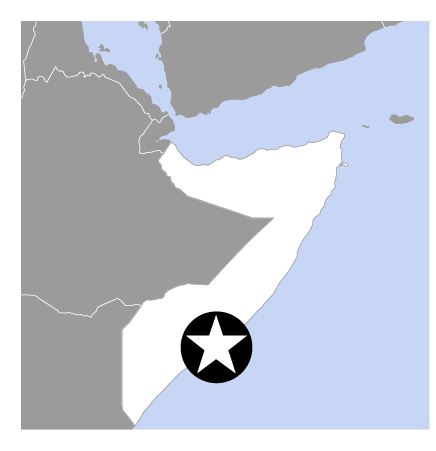
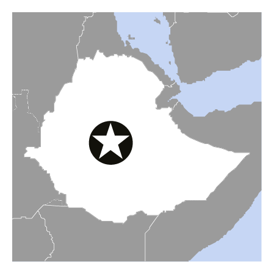
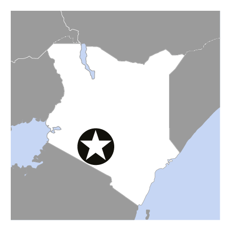

Food Crisis in Africa

Somalia
Download the Somalia edition
of the "Fighting Famine" leaflet
... or go to the appeal page.
You can also find information
via the Somalia page on DMIS.
Download map of appeal activities.

Ethiopia
Download the Ethiopia edition
of the "Fighting Famine" leaflet
... or go to the appeal page.
Download map of appeal activities.

Kenya
Download the Kenya edition
of the "Fighting Famine" leaflet
... or go to the appeal page.
Download map of appeal activities.